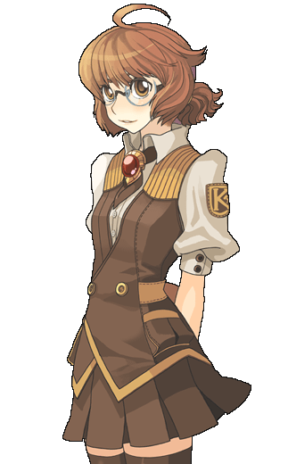
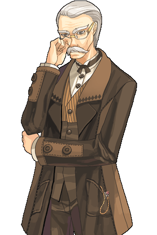
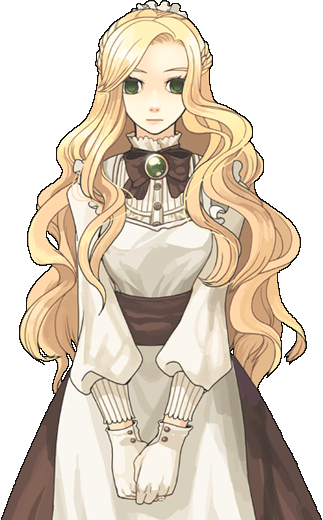
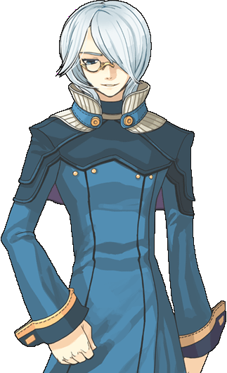
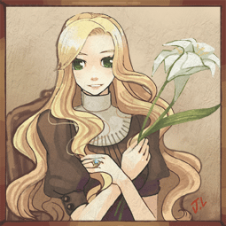
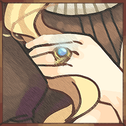
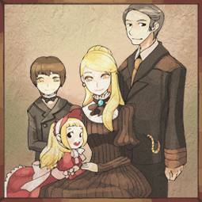
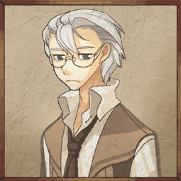

画像にリンクがはってあるものは、クリックすると別窓で大きめサイズが表示されます。
|  |

|
エリー | エリー |
エリー | エリー |

| |
キル・ハイル | キル・ハイル |
|  |  |
キル・ハイル | エリシア |
|  | |
キエル | キエル |
キエル | キエル |
|  |  |
| kh_ellisia_port.bmp | kh_ring_port.bmp |
|  |  |
| kh_family_port.bmp | kh_kyel_port.bmp |
back
(c) Gravity Co., Ltd. & Lee MyoungJin(studio DTDS). All rights reserved.
(c) GungHo Online Entertainment, Inc. All Rights Reserved.
当コンテンツの再利用（再転載・配布など）は、禁止しています。